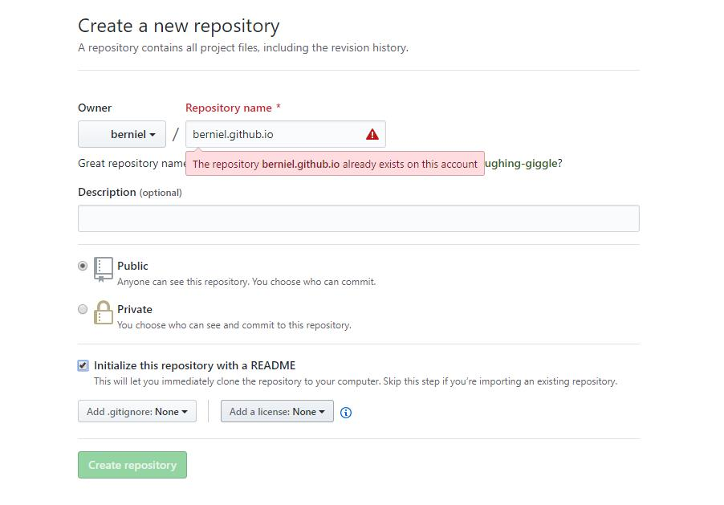

title: 使用Hexo搭建Github博客
date: 2019-04-01 12:56:31
博客搭建完辣！来分享一下搭建过程~
环境：Win10
这里是Node.js的安装地址：Node.js，下载对应的LTS安装版本，一键安装，省时省力。安装完毕后，打开cmd，输入下面两条指令，如果能够显示版本号，表示安装成功。
node -v
npm -v
使用npm，输入
npm install hexo -g
安装Hexo。安装完毕后，输入
hexo -v
检查Hexo是否安装成功。
进入一个要搭建博客的目录，输入
hexo init
开始初始化文件夹。初始化完成后，会显示
INFO: Start blogging with Hexo!
输入
npm install
安装所需组件。之后就是愉快的Hexo体验了！
测试：
生成静态文件；
hexo generate //hexo g
开启服务
hexo server //hexo s
如果你的电脑没有配置过git的话，还需要安装git。安装完成后，cmd输入
git --version
应输出版本号。
在Github上创建一个新的仓库，仓库名字叫做：xxx.github.io（xxx是你在github上的用户名），为了直观看到这个仓库名和网址的关系，不妨在创建的时候生成一个readme。

创建完成后，进入新建的仓库的Settings-GitHub Pages，可以看到提示
Your site is published at https://xxx.github.io
自此，xxx.github.io就是博客的地址了。如果不用xxx.github.io作为仓库名字的话，它生成的地址会变成 xxx.github.io/blablabla ，徒增繁琐。
打开cmd/git bash，输入：
git config --global user.name "yourname"
git config --global user.email "youremail"
这里的yourname输入你的GitHub用户名，youremail输入你GitHub的邮箱。这样GitHub才能知道你是不是对应它的账户。然后创建SSH：
ssh-keygen -t rsa -C "youremail"
在命令行中会提示.ssh生成的位置，找到这个文件夹（Windows下一般为C:\Users\你的用户名），打开文件夹下的id_rsa.pub文件，全选，复制。
ssh，简单来讲，就是一个秘钥，其中，id_rsa是你这台电脑的私人秘钥，不能给别人看的，id_rsa.pub是公共秘钥，可以随便给别人看。把这个公钥放在GitHub上，这样当你链接GitHub自己的账户时，它就会根据公钥匹配你的私钥，当能够相互匹配时，才能够顺利的通过git上传你的文件到GitHub上。
然后在Github的Setting里找到SSH and GPG keys，点击New SSH key把复制到的id_rsa.pub文件内容粘贴进去。在cmd/git bash中，输入
ssh -T git@github.com
查看是否成功。
首先配置_config.yml，修改deploy项：
deploy:
type: git
repo: https://github.com/你的Github用户名/你的Github用户名.github.io.git
branch: master
然后安装部署命令：
npm install hexo-deployer-git --save
把本地的Hexo部署到Github上：
hexo clean
hexo generate
hexo deploy
部署完成后，访问https://你的Github用户名.github.io 就可以看到你的博客了！
官方的主题网址为https://hexo.io/themes/。
找了一个多小时，最后还是选择了用的人最多、看起来简洁酷炫的NexT，DEMO。这里有一个超赞的NexT的配置博客：Hexo-NexT配置超炫网页效果。
命令：
hexo new "blogname" // hexo n "blogname"
这条命令会在source/_posts下面生成一个新的blogname.md模板，可以在里面编辑文章。
编辑完成后，输入下面两条指令发布文章。
hexo g
hexo d
npm install hexo-asset-image --save